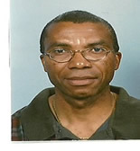

|  |
Kenneth Robinson |
Docent wiskunde
Ik ben docent op een middelbare school. Ik sport graag (fitness en basketbal). Ik doe ook een beetje yoga en speel een beetje gitaar.
Methode Moderne wiskunde: Moderne Wiskunde is een veel gebruikte methode.Download VU Grafiek en VU-Stat
| Datum | Gewerkt |
|---|---|
| voor 2010 | Middelbare scholen Suriname (AMS,Lyceum,Natin, Polytechnic College); Leraren opleiding |
| maart - juli 2000 | Het Baarns Lyceum (inval) |
| aug. 2000 - jan. 2016 | De Amersfoortse Berg |
| sept. 2015 - apr. 2019 | Nautilus College | sss | bbb |
| HTML5 | ⭐⭐⭐⭐ |
| CSS | ⭐⭐⭐ |
| Javascript | ⭐⭐ |
| PHP | ⭐⭐ |